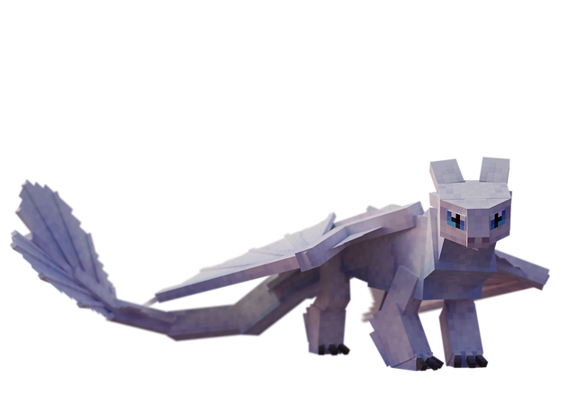
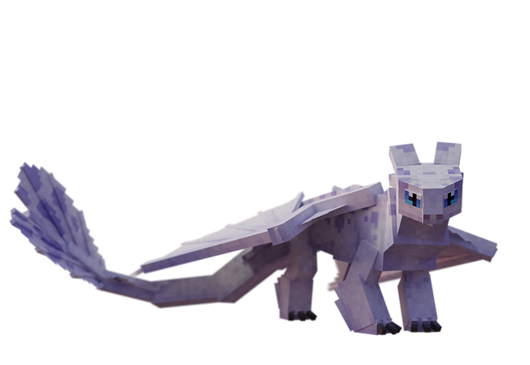
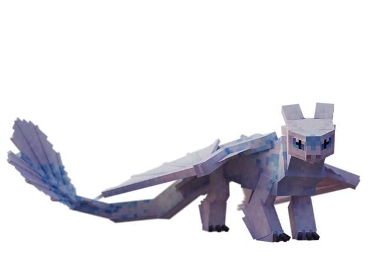
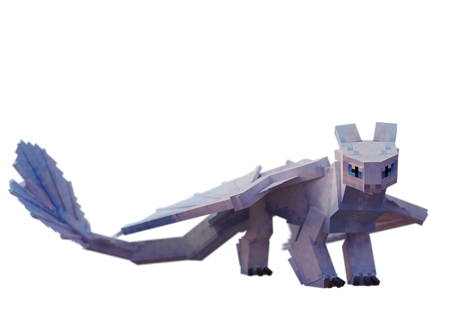
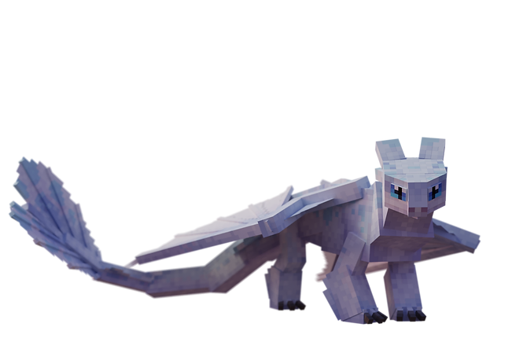
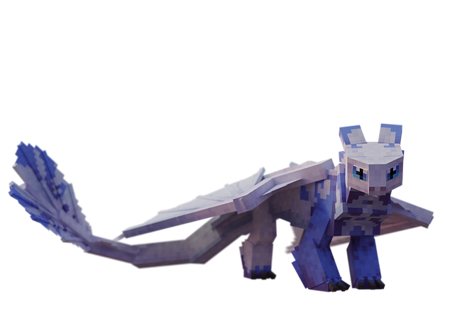

Light Fury
la Furie ÉclairDescription
§ 1Blanche comme la neige sur les fjords, invisible dans le ciel diurne.
Plus timide que sa cousine nocturne, mais redoutable une fois alliée. Elle est la dernière clé pour retrouver les Night Furies sauvages — apprivoise-la, donne-lui le Filtre d'amour, et l'Écaille-Compas se révèle.
Croisée avec un Night Fury, elle engendre les rares Night Lights.
Capacités
§ 2Plasma Blast
Tir d'énergie chargeable, identique au Night Fury mais avec moins de dégâts. Munition : FuryBolt.
Invisibility — Camouflage Thermique
La Light Fury devient invisible. Se déclenche aussi en fuite : si un joueur approche à ≤15 blocs sans Invisibilité active, la Light Fury sauvage s'active et disparaît automatiquement.
Apprivoisement
§ 3Tier IV — La potion sacrée.
Nourriture : Saumon, morue ou poisson tropical.
Conditions : Aucune armure ni arme · effet Invisibilité actif (sinon la Light Fury fuit immédiatement).
- Brasse une potion d'Invisibilité (8 minutes) et bois-la.
- Retire toute armure et arme.
- Approche une Light Fury sauvage doucement — sans Invisibility, elle se camoufle et fuit.
- Tiens du saumon, morue ou poisson tropical en main, clic droit.
- Au seuil 100, l'apprivoisement réussit (1 chance sur 7 par interaction).
Reproduction
§ 4Croisée avec un Night Fury apprivoisé → Night Light.
Habitat
§ 5Jagged Peaks, Frozen Peaks, Windswept Forests, Birch Forests, Old Growth Birch Forests.
Spawn rate : 3 (Rare).
Variantes (6)
§ 6
Variant 1
Sveinn
Blanc lunaire

Variant 2
Drottinn
Reflets argentés

Variant 3
Grogaldr
Tons de pâle aurore

Variant 4
Drottinn Grogaldr
Croisement noble

Variant 5
Sveinn Grogaldr
1/20 du taux normal — variante d'élite

Variant 6
Light Fury
Forme commune
Trivia
§ 7- Light Fury apprivoisée + Filtre d'amour (clic droit) → révèle l'Écaille-Compas, item HUD qui pointe vers le Night Fury légendaire de The End.
- Croisée avec un Night Fury : descendance Night Light (11 variantes, dont Dart, Pouncer et Ruffrunner — rejetons canoniques de Toothless).
- Variante Sveinn Grogaldr : 1/20 du taux normal de spawn.
- Son IA fuit dès qu'un joueur sans Invisibility approche à ≤15 blocs.
Commande /summon
§ 8/summon isleofberk:light_fury ~ ~ ~ {variant:1}
Remplace 1 par le numéro de variante (1 à 6).